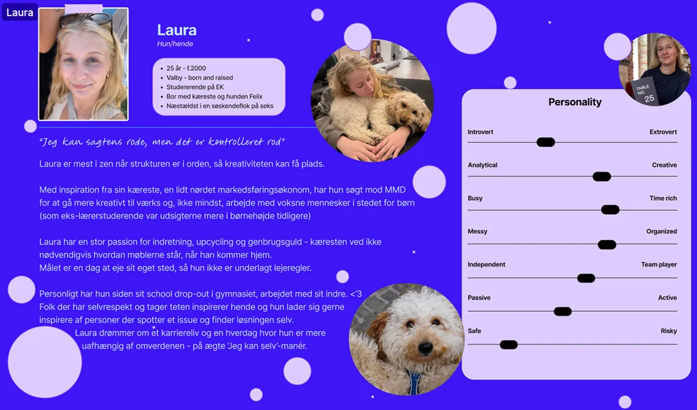
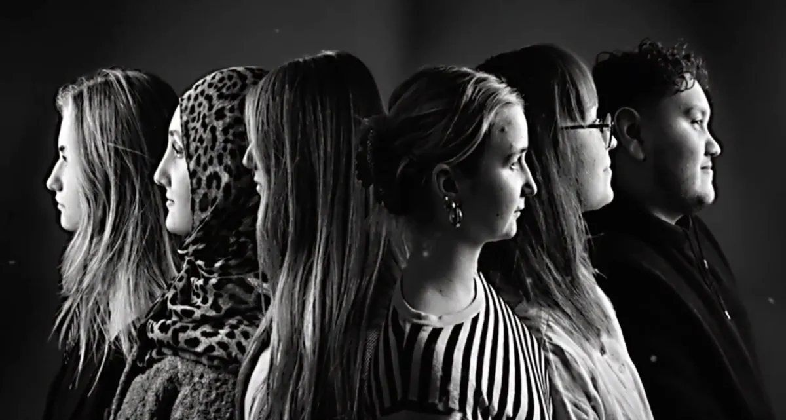

T1 Intro ugen
Formålet med ugen var primært at lære hinanden bedre at kende. Vi blev introduceret til vores lærer, skolen og de forventninger, der er til os som studerende. Derudover fik vi en gennemgang af de programmer, værktøjer og hjemmesider, som vi kommer til at arbejde med gennem uddannelsen.
Tema 1 gav os et overblik over studiets opbygning og de digitale platforme, der skal bruges til undervisning, opgaver og samarbejde. Samtidig lærte vi vores medstuderende at kende gennem forskellige aktiviteter, som styrkede fællesskabet og samarbejdet i klassen.

Opgave, proces og udførsel
I intro ugen blev vi introduceret til studiet, digitale og kreative værktøjer, samt arbejdsmetoder, som Figma, VS code og Github. Vi skulle i mindre grupper lave en intro video, med inspiration fra en tv serie og lave præsentationskort i figma til hinanden i par. Kodningen blev lavet i plenum, mens vi selv fik lov til at udarbejde vores figma design.
Vi valgte at lave videoen med inspiration fra serien Black Mirror. Ideen kom grundet seriens fokus på den digitale verden, samt den fremtid vi (forhåbentlig mindre dystopisk) nærmer os.
Se vidoen her